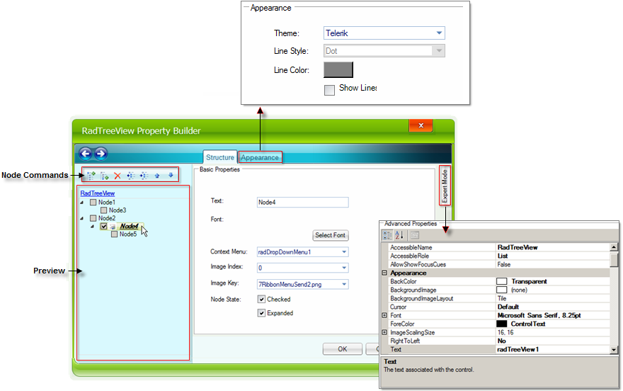
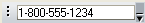
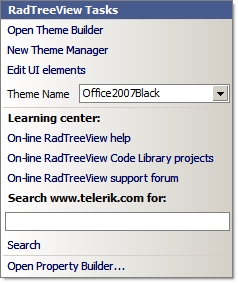
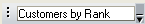

Menu Designer
Adding Main Menu items
There are multiple methods for building menus using the property collection editor or the RadMenu designer. To add a new main menu item:
Click the the RadMenu area labeled "Type here", and type your top level menu item directly into the entry space provided.
When you're finished click ESC__to abandon your edits or __Enter__to accept the edits and create
a new __RadMenuItem.
Or, click the drop-down arrow to the right of the existing main menu items, and select Add RadMenuItem,
Add RadMenuComboItem or Add RadMenuSeparatorItem to create an item of the corresponding type.
Once the menu item is created you can use the Smart Tag
to configure the Text, Image properties and edit the Items collection for the menu
item.Or, click the RadMenu control, open its Smart Tag
menu, and select Edit Items. Add a new RadMenuItem in the RadElement Collection Editor.
The menu designer is decorated with rightward and downward pointing arrow buttons. Right-pointing arrows
indicate Smart Tags for
the RadMenu and the individual RadMenuItems that make up the menu. Downward
pointing arrows let you add a particular menu item type, i.e. RadMenuItem, RadMenuComboItem
or RadMenuSeparatorItem.
Adding Sub Menu Items
To add a new sub-menu item to a main menu item, use one of these procedures:
Select the main menu item, click in its Items property, click the ellipsis button, and then use the RadElement Collection Editor.
Click a main menu item in the designer to invoke the Add new item.Add new will allow you to select from RadMenuitem, RadMenuComboItem or RadmenuSeparatorItem. Select one of these menu item types to create it and add it below the selected menu item.

Right-click the main menu item and select Add an item from the context menu.

Each RadMenuItem can have its own items to allow menu designs that require multiple levels of hierarchy.
Removing Menu Items
To remove a main menu or sub-menu item, select the item and press __Delete__or right click the menu item and
select __Delete__from the context menu.